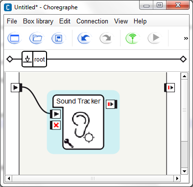
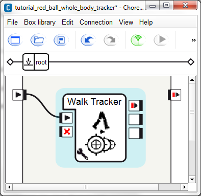

Trackers¶
Tracking a sound¶
In Choregraphe there is a very easy way to track a sound, using the Trackers > Sound Tracker box.
This box is made to track sound using NAO’s head.
Drag and drop the Sound Tracker box onto your diagram.
Link the input of the box to the beginning of the root behavior.
Your diagram should look like that:
Start the behavior using the following play button in the tool bar:
NAO reacts to surrounding sounds by moving its head toward the sound direction.
You can modify the threshold, by clicking on the adjustable wrench in the bottom left corner.
This threshold decides if the location of the sound is correct or not.
Tracking a red ball with NAO’s whole body¶
To track a red ball with NAO’s whole, we will use the Trackers > WB Tracker box.
This box is made to track a head or a red ball using NAO’s whole body.
Drag and drop the WB Tracker box onto your diagram.
Click on the adjustable wrench in the bottom left corner of the box and set the target choice to Red ball and the time before lost(s) to 4 seconds.
Link the input of the box to the beginning of the root behavior.
Your diagram should look like that:

Start the behavior using the following play button in the tool bar:
NAO reacts when it sees a red ball by tracking it with its entire body included in the kinematic chain.
Note
You can know when NAO has found or lost its tracking target by using the second and third output of the box.
Tracking a face using the Walk Tracker box¶
In this tutorial we will see how to use the Walk tracker box.
With this box, NAO will be able to track a face or a red ball by walking in its direction.
Drag and drop the Walk Tracker box onto your diagram.
Click on the adjustable wrench in the bottom left corner of the box and set the target choice to Face and the time before lost(s) to 4 seconds.
Link the input of the box to the beginning of the root behavior.
Your diagram should look like that:
Start the behavior using the following play button in the tool bar:
NAO reacts when it sees a face by walking to it.
Note
You can know when NAO has found or lost its tracking target by using the second and third output of the box.